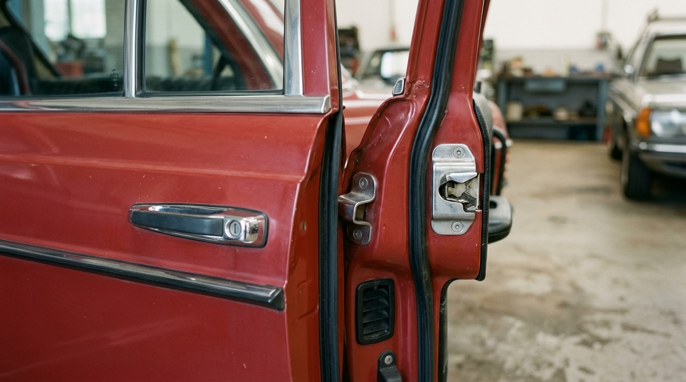

The rise and the thunk
Hydropneumatic suspension raises the body when the engine starts and lowers it when it stops — fluid easing that took 743 orders in fifteen minutes at the Paris show.
Start the engine and the whole Citroën lifts several centimetres on oil and nitrogen; cut it and the body sighs back down. The car performs its own power-on animation. Note what it never does: snap.
The W123 door teaches the ending: one dead, resonance-free note. No bounce, no rattle, no second syllable.

Striker wedge, double seals, tight shutline: one dead, resonance-free thunk that 2.7 million cars taught the world to hear as solidity.
Easing, drawn
An easing curve is just rate-of-change made visible. Riley proves it with two colors and one variable: square widths compress along a smooth curve, and a flat board appears to bend. Your cubic-bezier does the same thing to position over time.
Every square keeps its height while widths compress along one smooth curve toward a fold at two-thirds — one variable, two colors, and the static panel reads as bending.
Wright built one. The Guggenheim is a single quarter-mile ramp at a 3 percent grade — the building supplies the easing, and gravity runs the animation.
A single 1,416-foot ramp at a 3 percent grade, widening as it rises so the walk visually accelerates toward the skylight.
The minimum dose
Motion's first job is communication. In 2004 Basecamp answered "what just changed?" with a single animated property: one yellow flash, fading over two seconds, run once. Click Edit below and watch the page point without moving anything.
- Send the proposal to Sarah
- Book the photographer
- Write the release notes
- Order coffee for the office
The Yellow Fade Technique, Basecamp · 2004. One property, one run: background #FFFF99 easing to transparent over 2 s says "this is what changed," then gets out of the way. Era-correct Verdana. Built live in CSS — inspect it.
Pixels acquire mass
Between 2007 and 2009 touch interfaces gained weight. Drag both lists below. Ording's rubber band stretches with diminishing resistance and springs back — an edge stated as physics, not as a dialog.
- Alan Kay
- Bas Ording
- Bill Atkinson
- Bret Victor
- Charles Eames
- Dieter Rams
- Donald Norman
- Douglas Engelbart
- George Carwardine
- Imran Chaudhri
- Loren Brichter
- Matias Duarte
- Ray Eames
- Susan Kare
- Tony Fadell
Rubber-band overscroll · 2007. Drag the list past either end: travel beyond the edge is multiplied by ~0.45, and release springs back in ~350 ms with one tiny overshoot. US patent 7,469,381. Helvetica stands in for the original. Built live in CSS — inspect it.
Brichter went further and deleted a button: pull the timeline down and the arrow flips at exactly the release threshold. Palm made apps into cards you flick away with real inertia.
Pull-to-refresh, Tweetie 2 · 2009. The arrow rotates 180° the instant the pull crosses 60 px: a state change announced by motion, not words. Drag past the threshold and let go. Built live in CSS — inspect it.
Running apps shrink into live cards; flick one upward and it flies off with real inertia, making quitting a physical act that iOS 7 and Android later absorbed.
Speed is the feel
By 2020 the lesson inverted. Linear animates almost nothing: actions land from a local sync engine in tens of milliseconds, and what motion remains is a 120-millisecond ease-out fade. Restraint became a named style. Press replay; the modal arrives before you finish blinking.
Linear command menu · 2020. One 120 ms ease-out scale-and-fade, one indigo accent, keycap chips on every command, nothing saturated. Click rows or tab through them. system-ui stands in for Inter. Built live in CSS — inspect it.
Cloth in motion
Tailors solved motion design without a timeline. The drape cut banks spare cloth across the chest so the body can move inside the garment; the Neapolitan shoulder deletes padding so cloth follows the joint like a soft spring. Both engineer give by subtraction.
The raised arm hails a cab while the coat body stays put: a high, small armhole and spare chest cloth let sleeve and jacket move independently.
Shirt-like pleats set the sleeve into an unpadded shoulder; with canvas and padding deleted, the jacket weighs about half a structured coat and moves like knitwear.
Settle, then hold
End with the two most patient machines in this course. Carwardine balanced three springs against gravity so the Anglepoise moves with fingertip force and freezes anywhere, no locks. The motion is critically damped: it settles without a single oscillation.
Three springs clustered at the base mimic the constant tension of limb muscles: fingertip force to move, any pose held without a locking knob.
Watch the settle — the arm stops the instant the hand lets go, critically damped, the spring geometry Carwardine patented in February 1934.
The Eames chair hides its compliance entirely. Rubber shock mounts let the shells flex when you lean, with no spring or lever in sight. Feel was the written spec.
The shells flex on hidden rubber shock mounts, meeting the spec Charles wrote down: "the warm, receptive look of a well-used first baseman's mitt."
Motion is mass plus manners: slow in, slow out, give things weight, and stop the moment the message lands.
In your systems
Calm-ink, the system this page is set in, takes the strongest stance on motion of your five: a 1.1 s transition token and one easing curve, cubic-bezier(.22,.61,.36,1). The DS earns its slowness with damping; the W123 earns its weight with a dead stop. Audit each calm-ink transition against the yellow-fade test — does it say what changed, once, then stop?
Foldwell sits at the opposite pole with its boing easing: overshoot is follow-through, and it has to match the paper's apparent mass. If you removed the 1.1 s sweep from any one calm-ink interaction, would the reader lose information, or only decoration?
Take one existing transition (a hover or a modal) and build it twice: linear at 400 ms, then cubic-bezier(0.2, 0, 0, 1) at 250 ms with a 4 px translateY. Toggle between them ten times, then write one sentence on which version feels heavier and why. You have now felt easing instead of reading about it.
Vocabulary
- Slow in & slow out — easing is how mass exists on screen. Thomas & Johnston, The Illusion of Life: Disney Animation, 1981.
- Follow-through & overlapping action — parts arrive at different times. Thomas & Johnston, 1981.
- Staging — direct the eye to one event at a time. Thomas & Johnston, 1981.
- Fluid, interruptible, spring-driven motion — maps directly to SwiftUI springs in your iOS work. Apple, "Designing Fluid Interfaces," WWDC 2018.
Sources: Thomas & Johnston, The Illusion of Life (1981) · Apple, "Designing Fluid Interfaces," WWDC 2018 · Signal vs. Noise, 19 February 2004 · US Patent 7,469,381 (Ording, Apple) · Herman Miller and Anglepoise archives · Citroën, Paris Motor Show 1955.